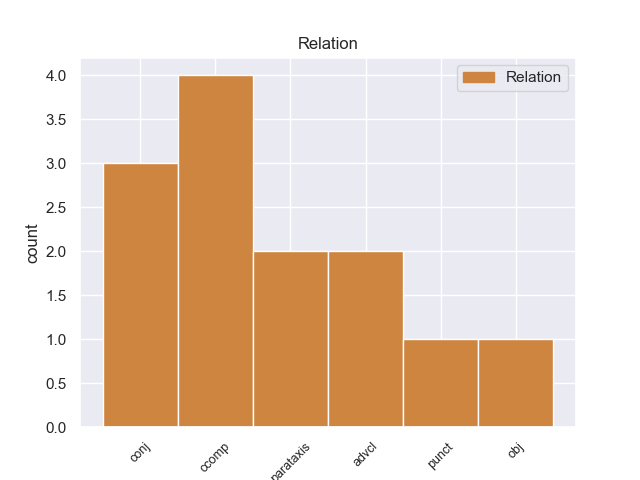
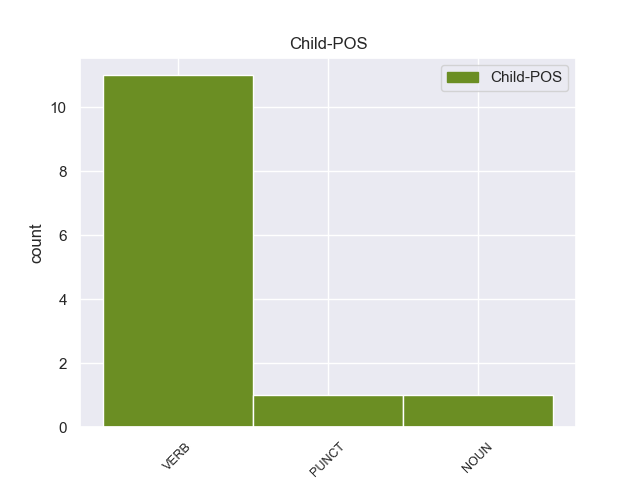

Distribution of features within this leaf



Agreement Rules sorted by frequency.
- When the dependent token is the clausal complement(ccomp) of the head token, and the dependent token is VERB.
1 Según _ _ _ _ 0 _ _ _
2 el _ _ _ _ 0 _ _ _
3 consejero _ _ _ _ 0 _ _ _
4 delegado _ _ _ _ 0 _ _ _
5 y _ _ _ _ 0 _ _ _
6 director _ _ _ _ 0 _ _ _
7 general _ _ _ _ 0 _ _ _
8 de _ _ _ _ 0 _ _ _
9 Enel _ _ _ _ 0 _ _ _
10 Green _ _ _ _ 0 _ _ _
11 Power _ _ _ _ 0 _ _ _
12 , _ _ _ _ 0 _ _ _
13 Francesco _ _ _ _ 0 _ _ _
14 Starace _ _ _ _ 0 _ _ _
15 , _ _ _ _ 0 _ _ _
16 " _ _ _ _ 0 _ _ _
17 el _ _ _ _ 0 _ _ _
18 logro _ _ _ _ 0 _ _ _
19 de _ _ _ _ 0 _ _ _
20 los _ _ _ _ 0 _ _ _
21 objetivos _ _ _ _ 0 _ _ _
22 de _ _ _ _ 0 _ _ _
23 crecimiento _ _ _ _ 0 _ _ _
24 que _ _ _ _ 0 _ _ _
25 Enel _ _ _ _ 0 _ _ _
26 Green _ _ _ _ 0 _ _ _
27 Power _ _ _ _ 0 _ _ _
28 se _ _ _ _ 0 _ _ _
29 había _ _ _ _ 0 _ _ _
30 fijado _ _ _ _ 0 _ _ _
31 para _ _ _ _ 0 _ _ _
32 2010 _ _ _ _ 0 _ _ _
33 confirma confirmar VERB _ Mood=Ind|Number=Sing|Person=3|Tense=Pres|VerbForm=Fin 0 _ _ _
34 que _ _ _ _ 0 _ _ _
35 estamos estar VERB _ Mood=Ind|Number=Plur|Person=1|Tense=Pres|VerbForm=Fin 33 ccomp _ _
36 en _ _ _ _ 0 _ _ _
37 el _ _ _ _ 0 _ _ _
38 buen _ _ _ _ 0 _ _ _
39 camino _ _ _ _ 0 _ _ _
40 para _ _ _ _ 0 _ _ _
41 cumplir _ _ _ _ 0 _ _ _
42 el _ _ _ _ 0 _ _ _
43 plan _ _ _ _ 0 _ _ _
44 de _ _ _ _ 0 _ _ _
45 desarrollo _ _ _ _ 0 _ _ _
46 anunciado _ _ _ _ 0 _ _ _
47 durante _ _ _ _ 0 _ _ _
48 nuestra _ _ _ _ 0 _ _ _
49 salida _ _ _ _ 0 _ _ _
50 a _ _ _ _ 0 _ _ _
51 bolsa _ _ _ _ 0 _ _ _
52 , _ _ _ _ 0 _ _ _
53 lo _ _ _ _ 0 _ _ _
54 que _ _ _ _ 0 _ _ _
55 respalda _ _ _ _ 0 _ _ _
56 la _ _ _ _ 0 _ _ _
57 validez _ _ _ _ 0 _ _ _
58 de _ _ _ _ 0 _ _ _
59 nuestra _ _ _ _ 0 _ _ _
60 estrategia _ _ _ _ 0 _ _ _
61 , _ _ _ _ 0 _ _ _
62 enfocada _ _ _ _ 0 _ _ _
63 en _ _ _ _ 0 _ _ _
64 el _ _ _ _ 0 _ _ _
65 desarrollo _ _ _ _ 0 _ _ _
66 equilibrado _ _ _ _ 0 _ _ _
67 y _ _ _ _ 0 _ _ _
68 sostenible _ _ _ _ 0 _ _ _
69 , _ _ _ _ 0 _ _ _
70 en _ _ _ _ 0 _ _ _
71 los _ _ _ _ 0 _ _ _
72 países _ _ _ _ 0 _ _ _
73 en _ _ _ _ 0 _ _ _
74 los _ _ _ _ 0 _ _ _
75 que _ _ _ _ 0 _ _ _
76 trabajamos _ _ _ _ 0 _ _ _
77 , _ _ _ _ 0 _ _ _
78 de _ _ _ _ 0 _ _ _
79 la _ _ _ _ 0 _ _ _
80 gama _ _ _ _ 0 _ _ _
81 completa _ _ _ _ 0 _ _ _
82 de _ _ _ _ 0 _ _ _
83 las _ _ _ _ 0 _ _ _
84 tecnologías _ _ _ _ 0 _ _ _
85 disponibles _ _ _ _ 0 _ _ _
86 con _ _ _ _ 0 _ _ _
87 vistas _ _ _ _ 0 _ _ _
88 a _ _ _ _ 0 _ _ _
89 maximizar _ _ _ _ 0 _ _ _
90 el _ _ _ _ 0 _ _ _
91 valor _ _ _ _ 0 _ _ _
92 para _ _ _ _ 0 _ _ _
93 nuestros _ _ _ _ 0 _ _ _
94 accionistas _ _ _ _ 0 _ _ _
95 " _ _ _ _ 0 _ _ _
96 . _ _ _ _ 0 _ _ _
1 Aunque _ _ _ _ 0 _ _ _
2 tiene tener VERB _ Mood=Ind|Number=Sing|Person=3|Tense=Pres|VerbForm=Fin 15 advcl _ _
3 mobiliario _ _ _ _ 0 _ _ _
4 antiguo _ _ _ _ 0 _ _ _
5 y _ _ _ _ 0 _ _ _
6 le _ _ _ _ 0 _ _ _
7 haría _ _ _ _ 0 _ _ _
8 falta _ _ _ _ 0 _ _ _
9 algo _ _ _ _ 0 _ _ _
10 más _ _ _ _ 0 _ _ _
11 de _ _ _ _ 0 _ _ _
12 limpieza _ _ _ _ 0 _ _ _
13 , _ _ _ _ 0 _ _ _
14 nos _ _ _ _ 0 _ _ _
15 encontramos encontrar VERB _ Mood=Ind|Number=Plur|Person=1|Tense=Pres|VerbForm=Fin 0 _ _ _
16 ante _ _ _ _ 0 _ _ _
17 un _ _ _ _ 0 _ _ _
18 buen _ _ _ _ 0 _ _ _
19 restaurante _ _ _ _ 0 _ _ _
20 . _ _ _ _ 0 _ _ _
1 Según _ _ _ _ 0 _ _ _
2 el _ _ _ _ 0 _ _ _
3 consejero _ _ _ _ 0 _ _ _
4 delegado _ _ _ _ 0 _ _ _
5 y _ _ _ _ 0 _ _ _
6 director _ _ _ _ 0 _ _ _
7 general _ _ _ _ 0 _ _ _
8 de _ _ _ _ 0 _ _ _
9 Enel _ _ _ _ 0 _ _ _
10 Green _ _ _ _ 0 _ _ _
11 Power _ _ _ _ 0 _ _ _
12 , _ _ _ _ 0 _ _ _
13 Francesco _ _ _ _ 0 _ _ _
14 Starace _ _ _ _ 0 _ _ _
15 , _ _ _ _ 0 _ _ _
16 " _ _ _ _ 0 _ _ _
17 el _ _ _ _ 0 _ _ _
18 logro _ _ _ _ 0 _ _ _
19 de _ _ _ _ 0 _ _ _
20 los _ _ _ _ 0 _ _ _
21 objetivos _ _ _ _ 0 _ _ _
22 de _ _ _ _ 0 _ _ _
23 crecimiento _ _ _ _ 0 _ _ _
24 que _ _ _ _ 0 _ _ _
25 Enel _ _ _ _ 0 _ _ _
26 Green _ _ _ _ 0 _ _ _
27 Power _ _ _ _ 0 _ _ _
28 se _ _ _ _ 0 _ _ _
29 había _ _ _ _ 0 _ _ _
30 fijado _ _ _ _ 0 _ _ _
31 para _ _ _ _ 0 _ _ _
32 2010 _ _ _ _ 0 _ _ _
33 confirma confirmar VERB _ Mood=Ind|Number=Sing|Person=3|Tense=Pres|VerbForm=Fin 0 _ _ _
34 que _ _ _ _ 0 _ _ _
35 estamos _ _ _ _ 0 _ _ _
36 en _ _ _ _ 0 _ _ _
37 el _ _ _ _ 0 _ _ _
38 buen _ _ _ _ 0 _ _ _
39 camino _ _ _ _ 0 _ _ _
40 para _ _ _ _ 0 _ _ _
41 cumplir _ _ _ _ 0 _ _ _
42 el _ _ _ _ 0 _ _ _
43 plan _ _ _ _ 0 _ _ _
44 de _ _ _ _ 0 _ _ _
45 desarrollo _ _ _ _ 0 _ _ _
46 anunciado _ _ _ _ 0 _ _ _
47 durante _ _ _ _ 0 _ _ _
48 nuestra _ _ _ _ 0 _ _ _
49 salida _ _ _ _ 0 _ _ _
50 a _ _ _ _ 0 _ _ _
51 bolsa _ _ _ _ 0 _ _ _
52 , _ _ _ _ 0 _ _ _
53 lo _ _ _ _ 0 _ _ _
54 que _ _ _ _ 0 _ _ _
55 respalda respaldar VERB _ Mood=Ind|Number=Sing|Person=3|Tense=Pres|VerbForm=Fin 33 parataxis _ _
56 la _ _ _ _ 0 _ _ _
57 validez _ _ _ _ 0 _ _ _
58 de _ _ _ _ 0 _ _ _
59 nuestra _ _ _ _ 0 _ _ _
60 estrategia _ _ _ _ 0 _ _ _
61 , _ _ _ _ 0 _ _ _
62 enfocada _ _ _ _ 0 _ _ _
63 en _ _ _ _ 0 _ _ _
64 el _ _ _ _ 0 _ _ _
65 desarrollo _ _ _ _ 0 _ _ _
66 equilibrado _ _ _ _ 0 _ _ _
67 y _ _ _ _ 0 _ _ _
68 sostenible _ _ _ _ 0 _ _ _
69 , _ _ _ _ 0 _ _ _
70 en _ _ _ _ 0 _ _ _
71 los _ _ _ _ 0 _ _ _
72 países _ _ _ _ 0 _ _ _
73 en _ _ _ _ 0 _ _ _
74 los _ _ _ _ 0 _ _ _
75 que _ _ _ _ 0 _ _ _
76 trabajamos _ _ _ _ 0 _ _ _
77 , _ _ _ _ 0 _ _ _
78 de _ _ _ _ 0 _ _ _
79 la _ _ _ _ 0 _ _ _
80 gama _ _ _ _ 0 _ _ _
81 completa _ _ _ _ 0 _ _ _
82 de _ _ _ _ 0 _ _ _
83 las _ _ _ _ 0 _ _ _
84 tecnologías _ _ _ _ 0 _ _ _
85 disponibles _ _ _ _ 0 _ _ _
86 con _ _ _ _ 0 _ _ _
87 vistas _ _ _ _ 0 _ _ _
88 a _ _ _ _ 0 _ _ _
89 maximizar _ _ _ _ 0 _ _ _
90 el _ _ _ _ 0 _ _ _
91 valor _ _ _ _ 0 _ _ _
92 para _ _ _ _ 0 _ _ _
93 nuestros _ _ _ _ 0 _ _ _
94 accionistas _ _ _ _ 0 _ _ _
95 " _ _ _ _ 0 _ _ _
96 . _ _ _ _ 0 _ _ _
1 Nosotros _ _ _ _ 0 _ _ _
2 , _ _ _ _ 0 _ _ _
3 veteranos _ _ _ _ 0 _ _ _
4 de _ _ _ _ 0 _ _ _
5 la _ _ _ _ 0 _ _ _
6 Resistencia _ _ _ _ 0 _ _ _
7 y _ _ _ _ 0 _ _ _
8 de _ _ _ _ 0 _ _ _
9 las _ _ _ _ 0 _ _ _
10 fuerzas _ _ _ _ 0 _ _ _
11 combatientes _ _ _ _ 0 _ _ _
12 de _ _ _ _ 0 _ _ _
13 la _ _ _ _ 0 _ _ _
14 Francia _ _ _ _ 0 _ _ _
15 libre _ _ _ _ 0 _ _ _
16 , _ _ _ _ 0 _ _ _
17 apelamos _ _ _ _ 0 _ _ _
18 a _ _ _ _ 0 _ _ _
19 las _ _ _ _ 0 _ _ _
20 jóvenes _ _ _ _ 0 _ _ _
21 generaciones _ _ _ _ 0 _ _ _
22 para _ _ _ _ 0 _ _ _
23 que _ _ _ _ 0 _ _ _
24 den dar VERB _ Mood=Sub|Number=Plur|Person=3|Tense=Pres|VerbForm=Fin 0 _ _ _
25 vida _ _ _ _ 0 _ _ _
26 a _ _ _ _ 0 _ _ _
27 estos _ _ _ _ 0 _ _ _
28 ideales _ _ _ _ 0 _ _ _
29 y _ _ _ _ 0 _ _ _
30 para _ _ _ _ 0 _ _ _
31 que _ _ _ _ 0 _ _ _
32 los _ _ _ _ 0 _ _ _
33 transmitan transmitir VERB _ Mood=Sub|Number=Plur|Person=3|Tense=Pres|VerbForm=Fin 24 conj _ SpaceAfter=No
34 . _ _ _ _ 0 _ _ _
1 En _ _ _ _ 0 _ _ _
2 tono _ _ _ _ 0 _ _ _
3 elegíaco _ _ _ _ 0 _ _ _
4 , _ _ _ _ 0 _ _ _
5 crispado _ _ _ _ 0 _ _ _
6 y _ _ _ _ 0 _ _ _
7 cínico _ _ _ _ 0 _ _ _
8 , _ _ _ _ 0 _ _ _
9 narra narra VERB _ Mood=Ind|Number=Sing|Person=3|Tense=Pres|VerbForm=Fin 0 _ _ _
10 tres _ _ _ _ 0 _ _ _
11 décadas _ _ _ _ 0 _ _ _
12 en _ _ _ _ 0 _ _ _
13 la _ _ _ _ 0 _ _ _
14 vida _ _ _ _ 0 _ _ _
15 de _ _ _ _ 0 _ _ _
16 un _ _ _ _ 0 _ _ _
17 trío _ _ _ _ 0 _ _ _
18 de _ _ _ _ 0 _ _ _
19 gangsters _ _ _ _ 0 _ _ _
20 ( _ _ _ _ 0 _ _ _
21 Liotta _ _ _ _ 0 _ _ _
22 , _ _ _ _ 0 _ _ _
23 un _ _ _ _ 0 _ _ _
24 recuperado _ _ _ _ 0 _ _ _
25 Joe _ _ _ _ 0 _ _ _
26 Pesci _ _ _ _ 0 _ _ _
27 y _ _ _ _ 0 _ _ _
28 De _ _ _ _ 0 _ _ _
29 Niro _ _ _ _ 0 _ _ _
30 ) _ _ _ _ 0 _ _ _
31 que _ _ _ _ 0 _ _ _
32 trabajan _ _ _ _ 0 _ _ _
33 para _ _ _ _ 0 _ _ _
34 una _ _ _ _ 0 _ _ _
35 familia _ _ _ _ 0 _ _ _
36 siciliana _ _ _ _ 0 _ _ _
37 asentada _ _ _ _ 0 _ _ _
38 sobre _ _ _ _ 0 _ _ _
39 todo _ _ _ _ 0 _ _ _
40 en _ _ _ _ 0 _ _ _
41 los _ _ _ _ 0 _ _ _
42 alrededores _ _ _ _ 0 _ _ _
43 de _ _ _ _ 0 _ _ _
44 el _ _ _ _ 0 _ _ _
45 aeropuerto _ _ _ _ 0 _ _ _
46 de _ _ _ _ 0 _ _ _
47 Nueva _ _ _ _ 0 _ _ _
48 Jersey _ _ _ _ 0 _ _ _
49 . . PUNCT _ Mood=Ind|Number=Sing|Person=3|Tense=Pres|VerbForm=Fin 9 punct _ _
1 En _ _ _ _ 0 _ _ _
2 este _ _ _ _ 0 _ _ _
3 momento _ _ _ _ 0 _ _ _
4 , _ _ _ _ 0 _ _ _
5 en _ _ _ _ 0 _ _ _
6 medio _ _ _ _ 0 _ _ _
7 de _ _ _ _ 0 _ _ _
8 la _ _ _ _ 0 _ _ _
9 guerra _ _ _ _ 0 _ _ _
10 civil _ _ _ _ 0 _ _ _
11 que _ _ _ _ 0 _ _ _
12 asolaba _ _ _ _ 0 _ _ _
13 Persia _ _ _ _ 0 _ _ _
14 , _ _ _ _ 0 _ _ _
15 y _ _ _ _ 0 _ _ _
16 el _ _ _ _ 0 _ _ _
17 cansancio _ _ _ _ 0 _ _ _
18 que _ _ _ _ 0 _ _ _
19 hacía _ _ _ _ 0 _ _ _
20 estragos _ _ _ _ 0 _ _ _
21 en _ _ _ _ 0 _ _ _
22 Bizancio _ _ _ _ 0 _ _ _
23 , _ _ _ _ 0 _ _ _
24 Omar _ _ _ _ 0 _ _ _
25 dio _ _ _ _ 0 _ _ _
26 comienzo _ _ _ _ 0 _ _ _
27 a _ _ _ _ 0 _ _ _
28 la _ _ _ _ 0 _ _ _
29 era _ _ _ _ 0 _ _ _
30 de _ _ _ _ 0 _ _ _
31 la _ _ _ _ 0 _ _ _
32 expansión _ _ _ _ 0 _ _ _
33 islámica _ _ _ _ 0 _ _ _
34 , _ _ _ _ 0 _ _ _
35 y _ _ _ _ 0 _ _ _
36 un _ _ _ _ 0 _ _ _
37 imperio _ _ _ _ 0 _ _ _
38 y _ _ _ _ 0 _ _ _
39 su _ _ _ _ 0 _ _ _
40 cultura _ _ _ _ 0 _ _ _
41 milenaria _ _ _ _ 0 _ _ _
42 fue _ _ _ _ 0 _ _ _
43 barrida _ _ _ _ 0 _ _ _
44 en _ _ _ _ 0 _ _ _
45 los _ _ _ _ 0 _ _ _
46 polvorientos _ _ _ _ 0 _ _ _
47 anales _ _ _ _ 0 _ _ _
48 de _ _ _ _ 0 _ _ _
49 la _ _ _ _ 0 _ _ _
50 historia _ _ _ _ 0 _ _ _
51 , _ _ _ _ 0 _ _ _
52 y _ _ _ _ 0 _ _ _
53 un _ _ _ _ 0 _ _ _
54 segundo _ _ _ _ 0 _ _ _
55 estuvo estuvo VERB _ Mood=Ind|Number=Sing|Person=3|Tense=Pres|VerbForm=Fin 0 _ _ _
56 a _ _ _ _ 0 _ _ _
57 punto punto NOUN _ Mood=Ind|Number=Sing|Person=3|Tense=Pres|VerbForm=Fin 55 obj _ _
58 de _ _ _ _ 0 _ _ _
59 lograr _ _ _ _ 0 _ _ _
60 lo _ _ _ _ 0 _ _ _
61 . _ _ _ _ 0 _ _ _
Disagree Examples:
1 Jacobo _ _ _ _ 0 _ _ _
2 quiere querer VERB _ Mood=Ind|Number=Sing|Person=3|Tense=Pres|VerbForm=Fin 0 _ _ _
3 nuevos _ _ _ _ 0 _ _ _
4 retos _ _ _ _ 0 _ _ _
5 y _ _ _ _ 0 _ _ _
6 en _ _ _ _ 0 _ _ _
7 la _ _ _ _ 0 _ _ _
8 ciudad _ _ _ _ 0 _ _ _
9 aragonesa _ _ _ _ 0 _ _ _
10 tendría tener VERB _ Mood=Cnd|Number=Sing|Person=3|VerbForm=Fin 2 conj _ _
11 quizás _ _ _ _ 0 _ _ _
12 minutos _ _ _ _ 0 _ _ _
13 para _ _ _ _ 0 _ _ _
14 poder _ _ _ _ 0 _ _ _
15 ir _ _ _ _ 0 _ _ _
16 subiendo _ _ _ _ 0 _ _ _
17 de _ _ _ _ 0 _ _ _
18 nivel _ _ _ _ 0 _ _ _
19 , _ _ _ _ 0 _ _ _
20 ya _ _ _ _ 0 _ _ _
21 que _ _ _ _ 0 _ _ _
22 el _ _ _ _ 0 _ _ _
23 portero _ _ _ _ 0 _ _ _
24 de _ _ _ _ 0 _ _ _
25 Paraguay _ _ _ _ 0 _ _ _
26 Justo _ _ _ _ 0 _ _ _
27 Villar _ _ _ _ 0 _ _ _
28 le _ _ _ _ 0 _ _ _
29 ha _ _ _ _ 0 _ _ _
30 quitado _ _ _ _ 0 _ _ _
31 el _ _ _ _ 0 _ _ _
32 puesto _ _ _ _ 0 _ _ _
33 . _ _ _ _ 0 _ _ _
1 Los _ _ _ _ 0 _ _ _
2 puntos _ _ _ _ 0 _ _ _
3 de _ _ _ _ 0 _ _ _
4 vista _ _ _ _ 0 _ _ _
5 sobre _ _ _ _ 0 _ _ _
6 la _ _ _ _ 0 _ _ _
7 naturaleza _ _ _ _ 0 _ _ _
8 y _ _ _ _ 0 _ _ _
9 severidad _ _ _ _ 0 _ _ _
10 de _ _ _ _ 0 _ _ _
11 los _ _ _ _ 0 _ _ _
12 problemas _ _ _ _ 0 _ _ _
13 con _ _ _ _ 0 _ _ _
14 el _ _ _ _ 0 _ _ _
15 consumo _ _ _ _ 0 _ _ _
16 a _ _ _ _ 0 _ _ _
17 largo _ _ _ _ 0 _ _ _
18 plazo _ _ _ _ 0 _ _ _
19 de _ _ _ _ 0 _ _ _
20 las _ _ _ _ 0 _ _ _
21 benzodiazepinas _ _ _ _ 0 _ _ _
22 varían var VERB _ Mood=Cnd|Number=Plur|Person=3|VerbForm=Fin 0 _ _ _
23 de _ _ _ _ 0 _ _ _
24 un _ _ _ _ 0 _ _ _
25 experto _ _ _ _ 0 _ _ _
26 a _ _ _ _ 0 _ _ _
27 otro _ _ _ _ 0 _ _ _
28 , _ _ _ _ 0 _ _ _
29 inclusive _ _ _ _ 0 _ _ _
30 de _ _ _ _ 0 _ _ _
31 un _ _ _ _ 0 _ _ _
32 país _ _ _ _ 0 _ _ _
33 a _ _ _ _ 0 _ _ _
34 otro _ _ _ _ 0 _ _ _
35 , _ _ _ _ 0 _ _ _
36 algunos _ _ _ _ 0 _ _ _
37 expertos _ _ _ _ 0 _ _ _
38 inclusive _ _ _ _ 0 _ _ _
39 cuestionan cuestionar VERB _ Mood=Ind|Number=Plur|Person=3|Tense=Pres|VerbForm=Fin 22 parataxis _ _
40 si _ _ _ _ 0 _ _ _
41 realmente _ _ _ _ 0 _ _ _
42 hay _ _ _ _ 0 _ _ _
43 algún _ _ _ _ 0 _ _ _
44 problema _ _ _ _ 0 _ _ _
45 con _ _ _ _ 0 _ _ _
46 el _ _ _ _ 0 _ _ _
47 consumo _ _ _ _ 0 _ _ _
48 de _ _ _ _ 0 _ _ _
49 benzodiazepinas _ _ _ _ 0 _ _ _
50 a _ _ _ _ 0 _ _ _
51 largo _ _ _ _ 0 _ _ _
52 plazo _ _ _ _ 0 _ _ _
53 . _ _ _ _ 0 _ _ _
1 Aunque _ _ _ _ 0 _ _ _
2 tiene tener VERB _ Mood=Ind|Number=Sing|Person=3|Tense=Pres|VerbForm=Fin 0 _ _ _
3 mobiliario _ _ _ _ 0 _ _ _
4 antiguo _ _ _ _ 0 _ _ _
5 y _ _ _ _ 0 _ _ _
6 le _ _ _ _ 0 _ _ _
7 haría hacer VERB _ Mood=Cnd|Number=Sing|Person=3|VerbForm=Fin 2 conj _ _
8 falta _ _ _ _ 0 _ _ _
9 algo _ _ _ _ 0 _ _ _
10 más _ _ _ _ 0 _ _ _
11 de _ _ _ _ 0 _ _ _
12 limpieza _ _ _ _ 0 _ _ _
13 , _ _ _ _ 0 _ _ _
14 nos _ _ _ _ 0 _ _ _
15 encontramos _ _ _ _ 0 _ _ _
16 ante _ _ _ _ 0 _ _ _
17 un _ _ _ _ 0 _ _ _
18 buen _ _ _ _ 0 _ _ _
19 restaurante _ _ _ _ 0 _ _ _
20 . _ _ _ _ 0 _ _ _
1 Nosotros _ _ _ _ 0 _ _ _
2 , _ _ _ _ 0 _ _ _
3 veteranos _ _ _ _ 0 _ _ _
4 de _ _ _ _ 0 _ _ _
5 la _ _ _ _ 0 _ _ _
6 Resistencia _ _ _ _ 0 _ _ _
7 y _ _ _ _ 0 _ _ _
8 de _ _ _ _ 0 _ _ _
9 las _ _ _ _ 0 _ _ _
10 fuerzas _ _ _ _ 0 _ _ _
11 combatientes _ _ _ _ 0 _ _ _
12 de _ _ _ _ 0 _ _ _
13 la _ _ _ _ 0 _ _ _
14 Francia _ _ _ _ 0 _ _ _
15 libre _ _ _ _ 0 _ _ _
16 , _ _ _ _ 0 _ _ _
17 apelamos apelar VERB _ Mood=Ind|Number=Plur|Person=1|Tense=Pres|VerbForm=Fin 0 _ _ _
18 a _ _ _ _ 0 _ _ _
19 las _ _ _ _ 0 _ _ _
20 jóvenes _ _ _ _ 0 _ _ _
21 generaciones _ _ _ _ 0 _ _ _
22 para _ _ _ _ 0 _ _ _
23 que _ _ _ _ 0 _ _ _
24 den dar VERB _ Mood=Sub|Number=Plur|Person=3|Tense=Pres|VerbForm=Fin 17 advcl _ _
25 vida _ _ _ _ 0 _ _ _
26 a _ _ _ _ 0 _ _ _
27 estos _ _ _ _ 0 _ _ _
28 ideales _ _ _ _ 0 _ _ _
29 y _ _ _ _ 0 _ _ _
30 para _ _ _ _ 0 _ _ _
31 que _ _ _ _ 0 _ _ _
32 los _ _ _ _ 0 _ _ _
33 transmitan _ _ _ _ 0 _ _ _
34 . _ _ _ _ 0 _ _ _